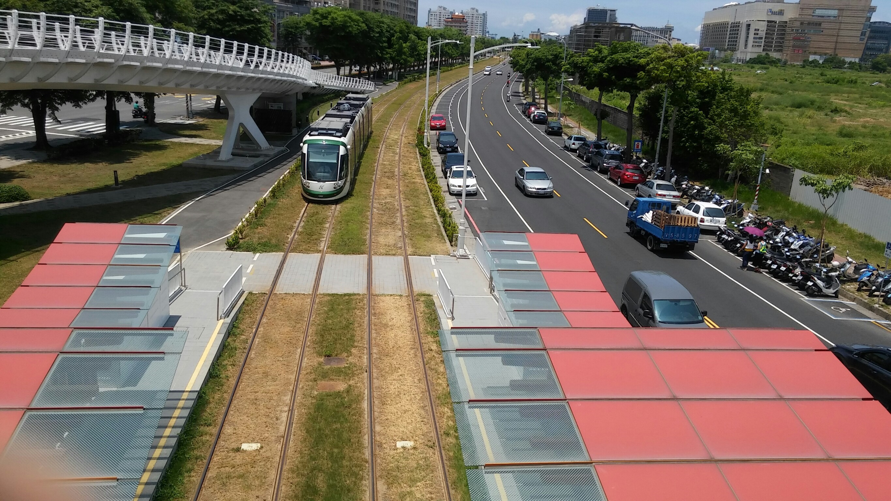
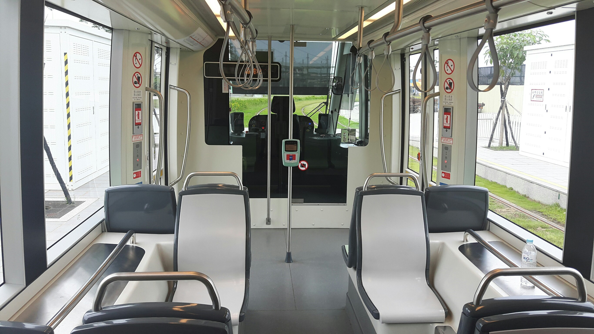
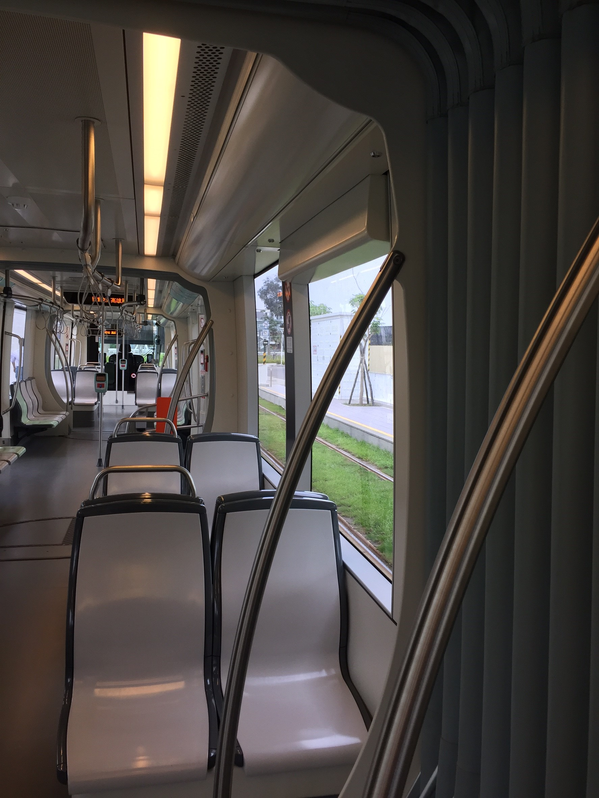
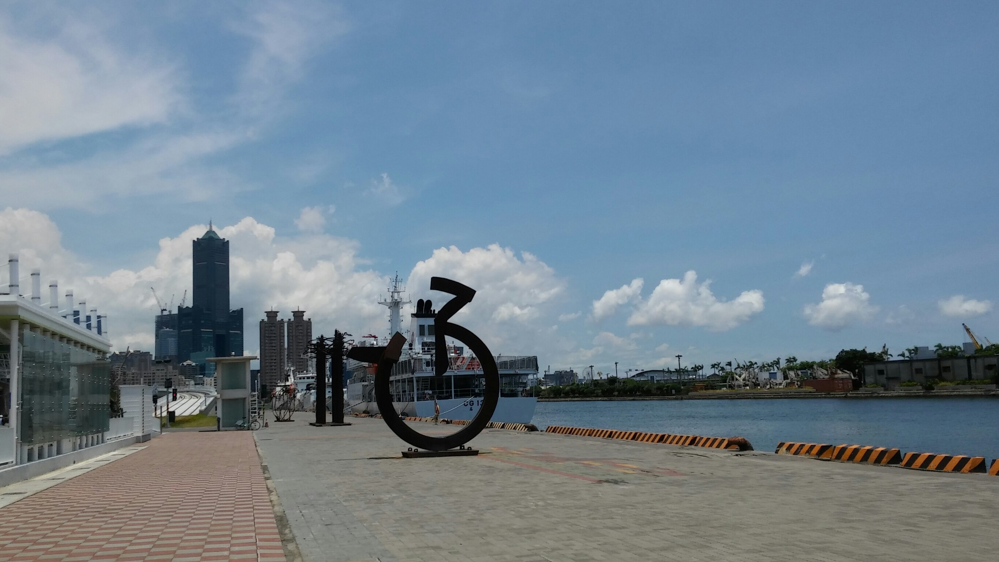

| 輕描淡寫 | ||||
首先呢，我先來說說前鎮之星站， 這站真的非常的方便，從捷運到輕軌的距離很近， 可以說是一下捷運就能看到輕軌呢~， 這裡不只輕軌的站點非常好看，自行車道也是非常的漂亮， 有機會可以來這裡騎自行車，運動運動，順便看看周邊的美景！ <前鎮之星站>滑鼠請移到圖片上 然後我進到輕軌裡面真的是眼睛一亮啊！ 裡面的擺設非常漂亮跟新，真希望以後搭乘都能跟現在一樣， 要呼籲大家使用的同時，也要保護它，讓它可以保存久一點， 讓它的美可以讓更多人看到，可以讓更多人欣賞，讓更多人認識。 <輕軌內部照片>
之後到了凱旋瑞田站，這邊有很有名的跳蚤市場，想來逛逛的各位可以來看看！
這是高雄展覽館，很多活動都是在這舉行。 輕軌真的是一個很好的交通工具，不只內部設計漂亮， 周邊景點更是沒話說，真的要多去看看，我們也想跟大家說說它更多美景， 更多景點，但把全部都介紹完大家去就沒樂趣了，沒有新鮮感，不如說一半， 另一半，讓大家好好去尋找，尋找輕軌之美！ <駁二輕軌>滑鼠請移到圖片
|
||||
 <凱旋瑞田站>
<凱旋瑞田站> <高雄展覽館>
<高雄展覽館>